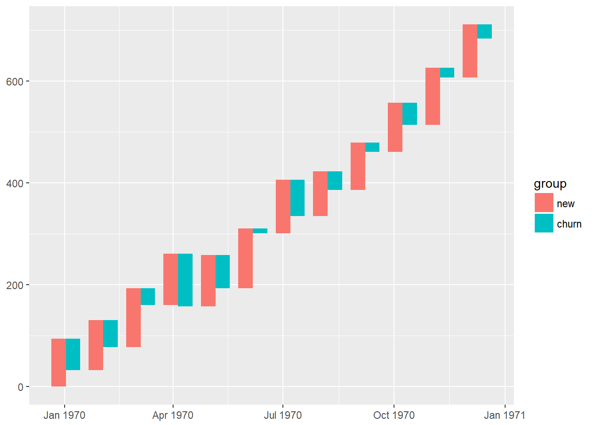
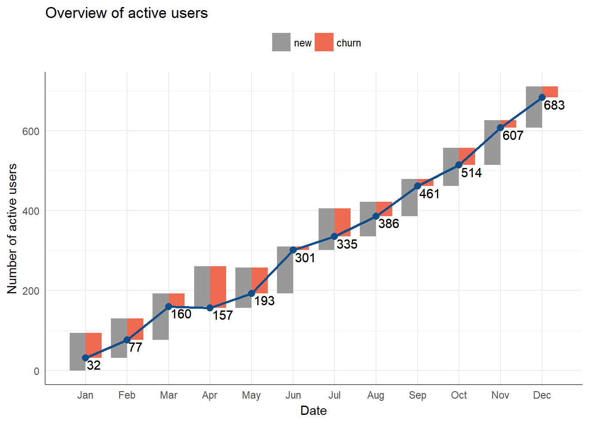
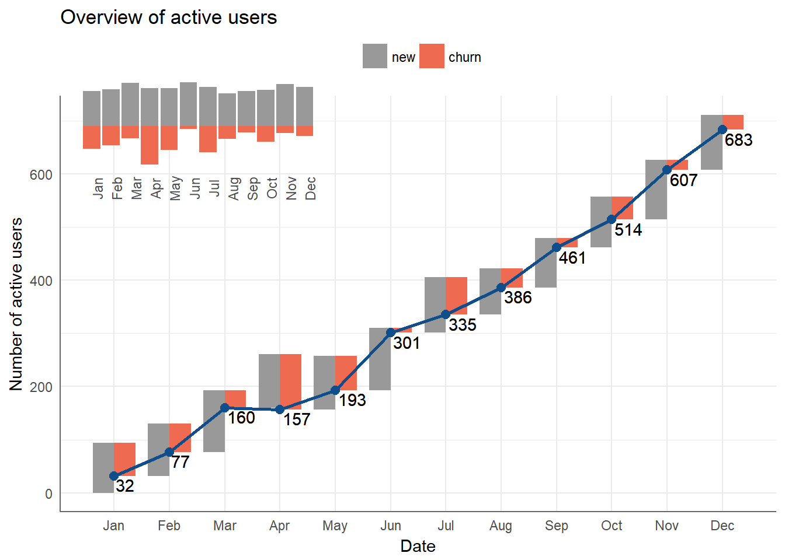

In digital world, active users is very important metrics but is quite hard to descrile performance of a website/service overtime. Typically, the formula of active user at given time t can be describle as follows:
\[active_{t} = active_{t-1} + new_{t} - churn_{t}\]
Naturally, waterfall chart comes to my mind as an candidate to vizualize performance of active users overtime. So, I tried to look for some real case study using waterfall chart for this very problem using R but I was stuck. However, after coules of hours looking through various sources, I found a really impressive use case of using Tableau to vizualize subscribe churn activity as follows.

The original link to the above chart can be found here
So, the next task of mine was to make similar chart with GGPLOT2 that I would like to share with R users,
# Load library
library(tidyverse)
library(ggplot2)
library(reshape2)
library(lubridate)
library(grid)
library(gridExtra)
# Create data for simulation
set.seed(123)
data <- data.frame(date = seq(1, 372, by = 31) %>% as_date)
data <- data %>%
mutate(new = abs(rnorm(12, 100, 10)) %>% round(0)) %>%
mutate(churn = abs(rnorm(12, 50, 30)) %>% round(0)) %>%
mutate(net = new - churn) %>%
mutate(eop = cumsum(net)) %>%
select(-net)
data## date new churn eop
## 1 1970-01-02 94 62 32
## 2 1970-02-02 98 53 77
## 3 1970-03-05 116 33 160
## 4 1970-04-05 101 104 157
## 5 1970-05-06 101 65 193
## 6 1970-06-06 117 9 301
## 7 1970-07-07 105 71 335
## 8 1970-08-07 87 36 386
## 9 1970-09-07 93 18 461
## 10 1970-10-08 96 43 514
## 11 1970-11-08 112 19 607
## 12 1970-12-09 104 28 683As you can see, data was generated randomly such that eop (end of period) user equal to end of privious period plus new users in current period minus churn users. It is very typical data for active/churn problems.
To create waterfall chart, we could use geom_segment from ggplot2
# Define the width of segment
step <- 0.4*(max(data$date) - min(data$date))/(nrow(data) - 1)
# Define ymax of segment
data <- data %>%
mutate(ymax = eop + churn)
# Define ymin of segment
df <- data %>%
melt(id.vars = c("date", "eop", "ymax")) %>%
mutate(ymin = ymax - value) %>%
rename(group = variable)
# Define xmin and xmax of segments
df <- df %>%
mutate(xmin = case_when(
group == "new" ~ date - step,
TRUE ~ date
)) %>%
mutate(xmax = case_when(
group == "new" ~ date,
TRUE ~ date + step
))
# Create waterfall chart
df %>%
arrange(date) %>%
ggplot() +
geom_rect(aes(xmin = xmin,
xmax = xmax,
ymin = ymin,
ymax = ymax,
fill = group)) -> p1
p1
We have successfully created a waterfall chart! So, the next steps are to optimize colors & create the line chart.
# Create data for line chart
df2 <- df %>% select(date, eop) %>% distinct()
# Optimize colors, themes & add lines
p2 <- p1 +
geom_line(aes(date, eop), col = "dodgerblue4", size = 1) +
geom_point(aes(date, eop), col = "dodgerblue4", size = 2.5) +
geom_text(aes(date, eop, label = eop), vjust = 1.2,
hjust = -0.1) +
scale_fill_manual(values = c("grey60", "coral2")) +
theme_minimal() +
theme(
axis.line = element_line(color = "gray40", size = 0.5),
legend.position = "top") +
scale_x_date(breaks = data$date,
date_labels = "%b") +
theme(panel.grid.minor.x = element_blank(),
legend.title = element_blank()) +
ggtitle("Overview of active users") +
xlab("Date") +
ylab("Number of active users")
p2
Not bad, right! The next chart will be the classic bar chart with geom_bar.
p3 <- df %>%
mutate(value = case_when(
group == "churn" ~ -1 * value,
TRUE ~ value
)) %>%
ggplot(aes(date, value)) +
geom_bar(aes(fill = group), stat = "identity") +
scale_fill_manual(values = c("grey60", "coral2")) +
theme_minimal() +
theme(
legend.position = "none",
axis.title.x = element_blank(),
axis.title.y = element_blank(),
axis.ticks.y = element_blank(),
axis.text.y = element_blank(),
panel.grid.minor = element_blank(),
panel.grid.major = element_blank(),
axis.text.x = element_text(angle = 90)
) +
scale_x_date(breaks = data$date,
date_labels = "%b")
p3
And, the final step is to combine the two above charts together using grid & gridExtra packages!
grid.newpage()
# Define position of the main chart
position_1 <- viewport(width = 1, height = 1, x = 0.5, y = 0.5) # the larger map
# Position of the secondary chart
position_2 <- viewport(width = 0.35, height = 0.25, x = 0.25, y = 0.75)
print(p2, vp = position_1)
print(p3, vp = position_2)
Done! We have created a very beautiful waterfall chart using ggplot2!